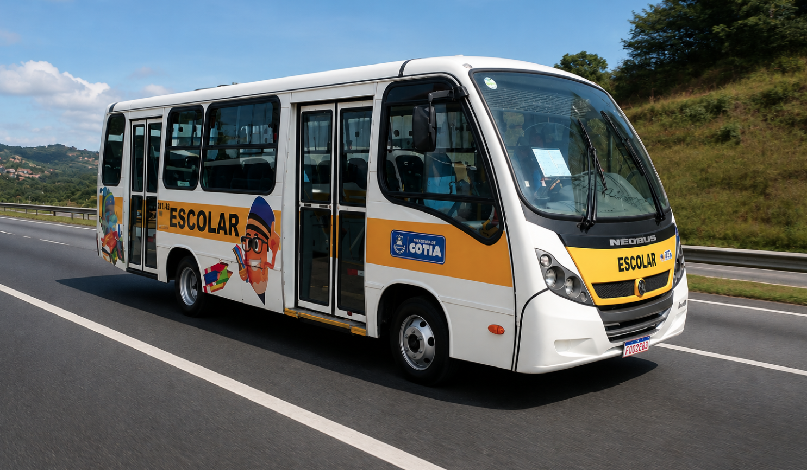

A Valle Viação é uma empresa voltada à gestão de soluções de transporte, com atuação no fretamento de ônibus, no transporte escolar e na organização de veículos para turismo e viagens particulares. Nosso papel é conectar as necessidades de cada operação aos recursos necessários para realizar os deslocamentos com responsabilidade.
Além da gestão de veículos, nosso trabalho envolve a organização das operações e o acompanhamento de empresas parceiras de fretamento. Buscamos alinhar o planejamento dos trajetos, as necessidades dos passageiros e a execução dos serviços, com atenção à segurança, à qualidade do atendimento e à pontualidade.
A Valle é responsável pelo TEG Cotia, voltado ao transporte escolar municipal, e pela Valle Trips, dedicada ao turismo e às viagens. Essas frentes atendem a diferentes necessidades: o deslocamento cotidiano dos estudantes e as experiências de grupos que desejam conhecer novos lugares, participar de eventos ou realizar passeios.
Entendemos que cada viagem tem um propósito. Para alguns passageiros, o destino é a escola; para outros, é um compromisso profissional, um encontro em família ou um momento de lazer. Por isso, buscamos conduzir cada operação com organização, respeito e cuidado com as pessoas que dependem do transporte.
O que nos move
Nossa missão
Oferecer e gerenciar soluções de transporte que conectem pessoas e destinos com segurança, qualidade e pontualidade, atendendo às necessidades do transporte escolar, do fretamento e do turismo com responsabilidade e respeito.
Essa missão orienta o cuidado com o planejamento das operações, a relação com empresas parceiras e a atenção aos passageiros. Buscamos tornar os deslocamentos mais organizados e tranquilos, contribuindo tanto para a rotina de quem utiliza nossos serviços quanto para as experiências de quem viaja conosco.
Nossa atuação
Diferentes trajetos. O mesmo compromisso.
01
Fretamento
Organizamos soluções de fretamento para empresas e grupos, considerando a finalidade do deslocamento e as necessidades de cada viagem. Nossa atuação inclui a gestão das operações e de empresas parceiras que participam da prestação dos serviços.
02
Transporte escolar
Por meio do TEG Cotia, atuamos no transporte escolar municipal. Essa frente exige atenção à rotina dos estudantes, organização dos trajetos e compromisso com o cuidado no deslocamento entre a comunidade e a escola.
03
Turismo e viagens
A Valle Trips é nossa frente dedicada ao turismo e às viagens, com foco em passeios, excursões, eventos e deslocamentos particulares. Buscamos apoiar grupos na organização do transporte para que aproveitem o destino e os momentos compartilhados.
Por dentro da Valle
Pessoas, tecnologia e experiências em movimento.
Conheça os cuidados que fazem parte do transporte escolar e descubra nossa atuação no turismo.
Tecnologia · TEG Cotia
Identificação por NFC: mais organização no embarque
Um registro por aproximação ajuda a acompanhar a rotina de embarque dos estudantes.
Tecnologia a serviço da organização do transporte escolar.
No TEG Cotia, a identificação por NFC faz parte do procedimento de embarque. A aproximação da identificação ao leitor permite registrar a entrada do estudante, apoiando o acompanhamento da operação e a consulta aos registros de presença.
Conforme o procedimento operacional informado, o uso do NFC é obrigatório no embarque. Quando não é possível realizar a leitura, a monitora deve registrar uma ocorrência para documentar a situação. No desembarque, a leitura não é obrigatória.
O registro digital complementa o trabalho da equipe. A orientação das monitoras, a conferência dos estudantes e o registro das situações que precisam de atenção continuam sendo essenciais para uma operação organizada.
Cuidado · Transporte escolar
Segurança começa antes de chegar à escola
Cada etapa do trajeto pede atenção: da espera pelo veículo ao desembarque.

O cuidado com os estudantes acompanha todo o trajeto.
Transportar estudantes envolve mais do que realizar um percurso. É preciso cuidar da organização do embarque, respeitar as orientações da equipe e manter atenção às necessidades dos passageiros durante a viagem.
Motoristas e monitoras têm papéis complementares nessa rotina. A condução responsável e o acompanhamento dos estudantes contribuem para um deslocamento mais tranquilo. A colaboração das famílias e das escolas também ajuda a manter as informações atualizadas e a comunicar situações que possam afetar o transporte.
Como orientação aos passageiros, é importante aguardar em local seguro, embarcar com calma, utilizar o cinto de segurança e seguir as instruções da monitora. A tecnologia apoia os registros, enquanto o cuidado das pessoas orienta as decisões do dia a dia.
Comunidade · Gestão pública
Transporte escolar e a participação da Prefeitura
O transporte escolar municipal faz parte do cuidado com o acesso dos estudantes à educação.
O TEG Cotia está ligado à rotina do transporte escolar municipal. Nesse contexto, o diálogo entre a gestão pública, as escolas, as famílias e a equipe de operação é importante para identificar necessidades e acompanhar situações que afetam o deslocamento dos estudantes.
A Valle atua na gestão da operação, com atenção à organização do serviço e à comunicação necessária para o atendimento. A articulação com a Prefeitura e com a área de educação deve respeitar as responsabilidades de cada parte, mantendo o foco nas necessidades dos alunos.
Ações institucionais, reuniões e iniciativas relacionadas ao transporte podem ser apresentadas neste espaço, aproximando a comunidade do trabalho realizado e dando visibilidade às informações relevantes para as famílias.
Valle Trips: experiências que ficam
Novos destinos, momentos compartilhados e o prazer de viajar em grupo.
Cada destino pode ser o começo de uma nova história.
A Valle Trips é a frente da Valle dedicada ao turismo e às viagens. Sua atuação está voltada a passeios, excursões, eventos e deslocamentos particulares, conectando grupos às experiências que desejam viver.
Uma viagem pode reunir amigos, famílias, colegas de trabalho ou pessoas que compartilham o interesse por um destino. A organização do transporte faz parte desse planejamento e deve considerar o percurso, os horários e as necessidades do grupo.
Praia, campo, cidade ou um passeio cultural: cada roteiro tem seu ritmo. Neste espaço, a Valle Trips pode compartilhar registros das viagens, apresentar destinos e publicar informações sobre novas experiências, sempre com os detalhes de cada programação confirmados.
Mais do que chegar a um lugar, viajar é compartilhar o caminho e criar lembranças. É esse olhar que inspira a Valle Trips e sua proposta de experiências que ficam.